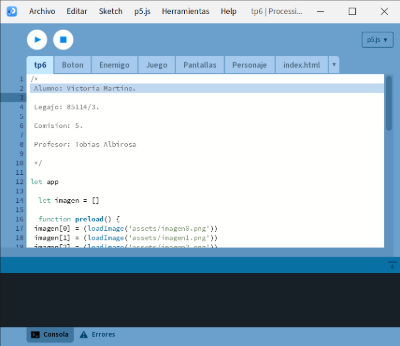
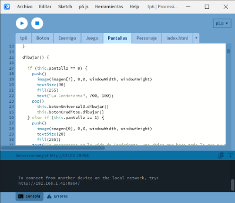

La Cenicienta cuenta la aventura de una dulce y hermosa joven maltratada por su malvada madrastra y sus dos malvadas hermanastras que un día atiende a un maravilloso baile real con la ayuda de su hada madrina. La muchacha baila con el príncipe y de él se enamora.
La Cenicienta cuenta con varias adaptaciones, en peliculas tanto animadas como live action, musicales, dansas, muñecas, atracciones, etc. Ademas tiene diferentes versiones segun el continente en el que se cuente la historia.
La version que use para el trabajo final es la de Charles Perrault. Mi hisrtoria grafica cuenta con dos finales, un final malo donde Cenicienta no se casa con el principe y una final bueno que es el que Charles Perrault escribio.
Charles Perrault (París, 12 de enero de 1628-16 de mayo de 1703) fue un escritor francés, principalmente reconocido por haber dado forma literaria a cuentos clásicos infantiles como Piel de asno, Pulgarcito, Barba Azul, La Cenicienta, La bella durmiente, Caperucita Roja y El Gato con Botas, atemperando en muchos casos la crudeza de las versiones orales, la mayoría de sus cuentos son infantiles y de fantasía.
En 1683, con 55 años, Perrault, después de perder al mismo tiempo su puesto en la Academia y a su mujer, decide consagrarse a la educación de sus hijos y escribe Cuentos de antaño,Nota 1 donde aparecen sus cuentos más famosos. Ésta recopilación, publicada en 1697 cuando contaba 69 años, se subtituló «Cuentos de Mamá Ganso»; y son cuentos:
tanto de inspiración en la tradición oral —Mamá Ganso/Oca («Mère l’Oye»), que representa a la niñera que cuenta cuentos a los niños—
como literaria (ya Boccaccio había escrito una primera versión de Grisélidis en el Decamerón).
O leyendas de exótico origen.
A este material ya existente, Perrault aporta una moraleja que las haga útiles «para la educación de las jovencitas»: Al final de cada relato, el autor incluye una enseñanza moral referente al contenido de cada historia, para destacar los valores de estos.
Desarrollo del juego
Elegi el cuento de La Cenicienta al ser una historia que ya conocia por la pelicula creada por Disney, sin saber que la version del cuento tenia algunas diferencias.
Para ayudarme con la organizacion de las pantallas, cree un diagrama de flujo con todas las pantallas que queria tener. Las pantallas no coinciden con las que estan en el trabajo final, ya que este diagrama fue creado para el tp3
Esto permitio la organizacion fuese mucho mas limpia y facil de visualizar.

Las clases Enemigo y Personaje se dibujan en la clase Juego. La clase Pantallas dibuja todas las imagenes y las clases Juego y Boton. Por ultimo la pestaña tp6 carga las imagenes y dibuja las pantallas como las interacciones que el usuario debe realizar con el mouse y el teclado.

Mi mini juego consta de un cuadrado que debe de esquibar unos rectangulos que van cayendo, este lo hice en mi tp5 y lo reutilice para este trabajo.
Mi trabajo tiene bastantes errores y no tiene un diseño definido porque tuve muchos problemas con la computadora. Ademas no tengo muchas imagenes o prubas de como fue el proceso porque hice todo el trabajo en el mismo archivo